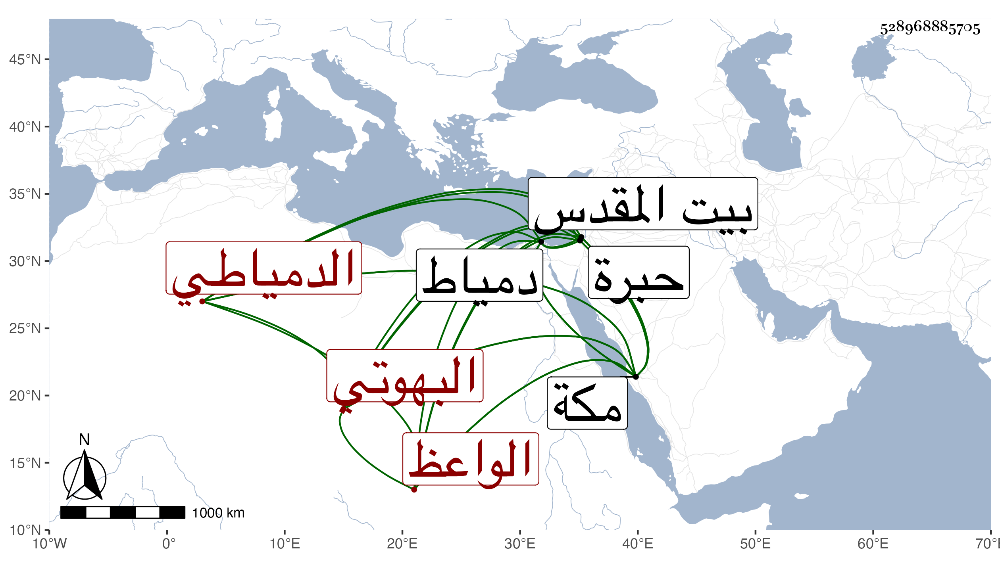

0902Sakhawi.DawLamic.ITO20230111-ara1.EIS1600.528968885705
Biography ID: 528968885705
816
علي بن عبد السلام بن موسى نور الدين البهوتي الأصل الدمياطي الشلفعي الواعظ الماضي أبوه وأخو الولوي محمد الآتي . ممن ولد تقريبا في سنة سبع وخمسين وثمانمائة بدمياط وحفظ القرآن ونحو النصف الأول وجميع الجرومية واشتغل بالفقه والعربية عند الشهاب البيجوري وغيره وتميز واعتنى بقراءة الحديث ولازمني في أشياء من تصانيفي وغيرها ولقيني بمكة فأخذ عني بها أيضا وكذا أخذ عن الديمي وتكلم على الناس ببلده وفي مكة وغيرهما وزار القدس والخليل وأخذ عن الشهاب العميري ، والغالب عليه الخير وسلامة الفطرة وأظنه يتولع بالنظم وأخوه أفضل منه .
